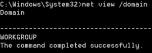

domain & domain controllers
Windows• domain
 the target machine is in the
domain WORKGROUP
• domain & domain controller(s)
meterpreter> run post/windows/gather/enum_domains
With this script we can know also the
domain controller• domain controller(s)
C:\> net group "Domain Controllers" /domain